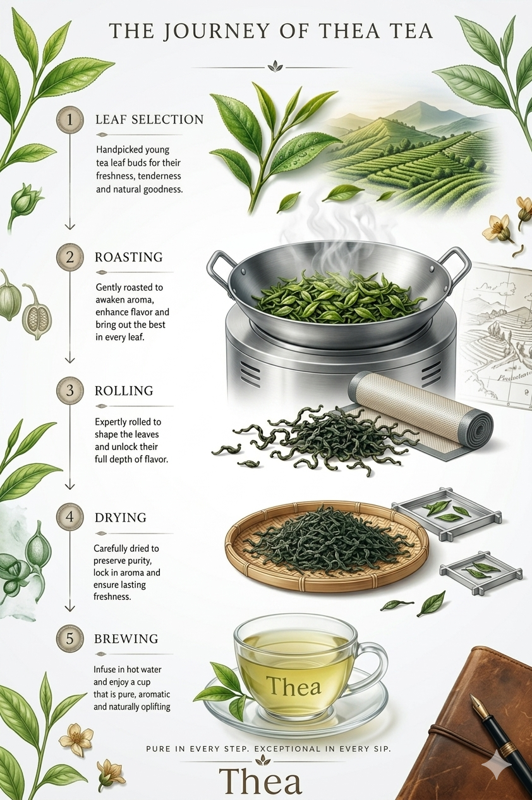

Thea
A divine cup of purity and happiness in every sip.
Goodness starts at the source. At Thea, we select only the most tender buds and young leaves to ensure every sip carries the vibrant energy of the garden.
Precision is at the heart of Thea. To ensure a smooth taste, our leaves undergo immediate fixation—through gentle steaming or pan-firing—to stop oxidation. We then carefully roll the leaves to release their deep flavor, followed by drying at a precise, consistent temperature to lock in freshness.

To preserve the delicate antioxidants and flavor of our factory-crafted leaves, follow these steps:
Bring fresh water to about 80°C (just before it reaches a rolling boil). Boiling water can scorch the leaves and make them bitter.
Add one teaspoon (approx. 2g) of Thea Green Tea leaves for every cup of water.
Pour water over the leaves and steep for exactly 2-3 minutes. This ensures a smooth, refreshing profile without the bitterness.